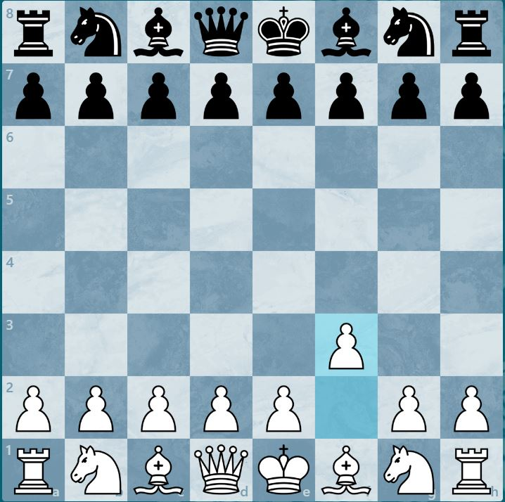
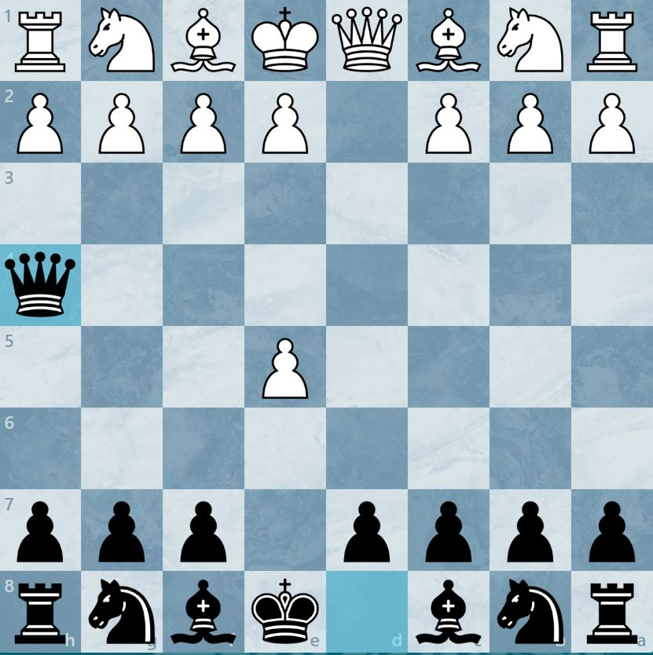
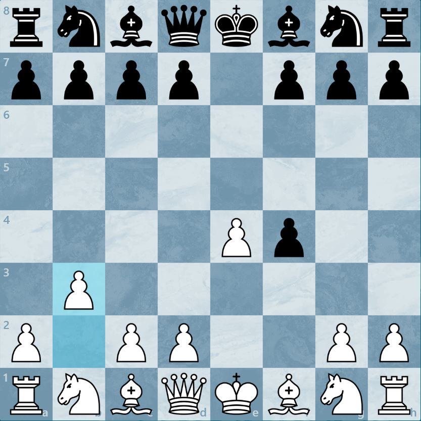
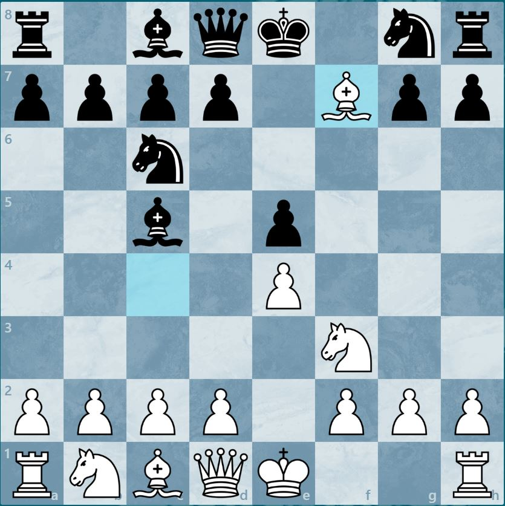
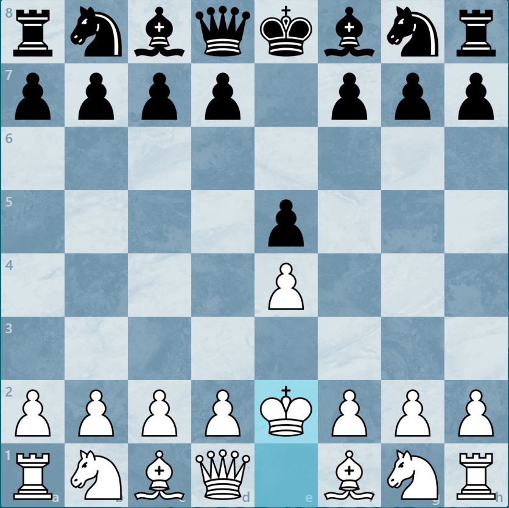
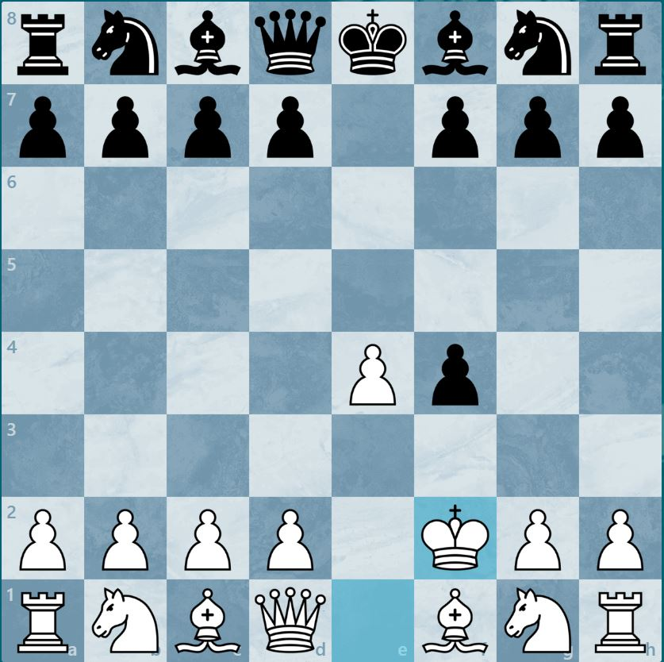
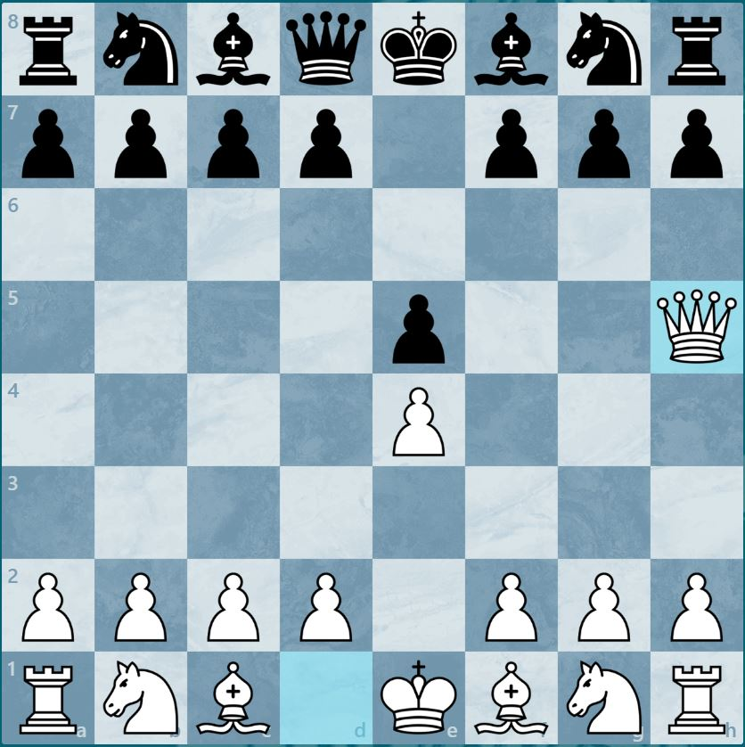
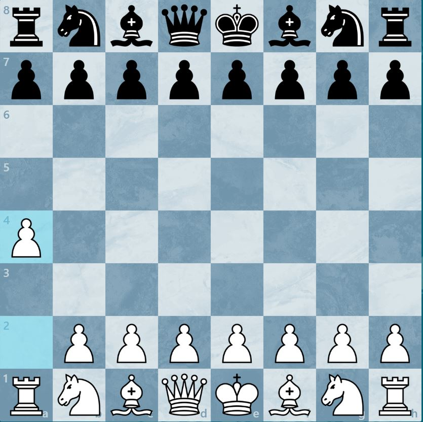
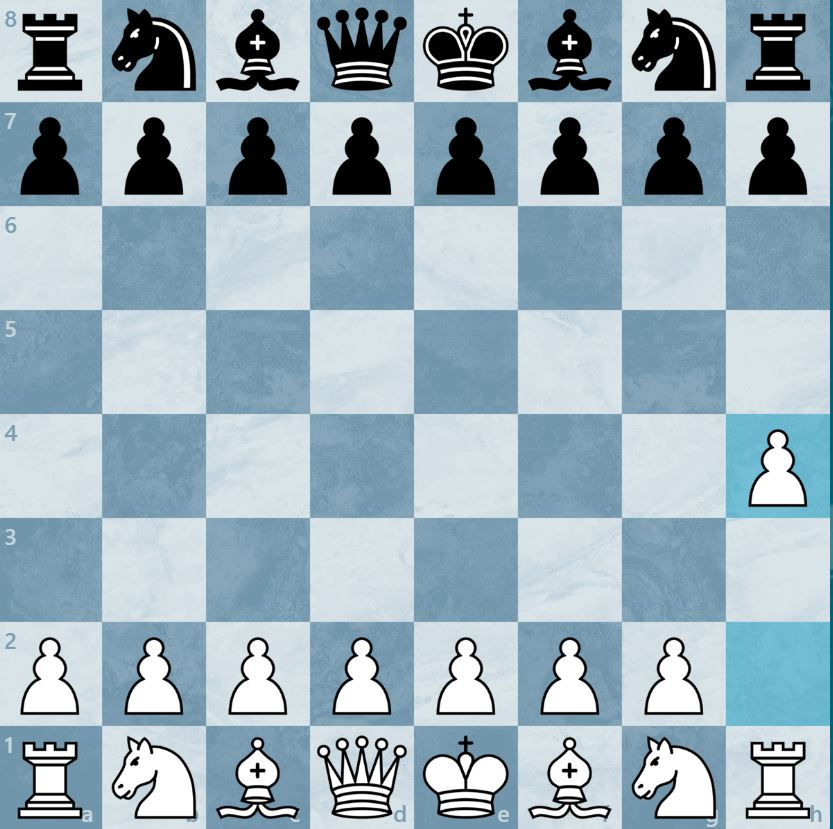
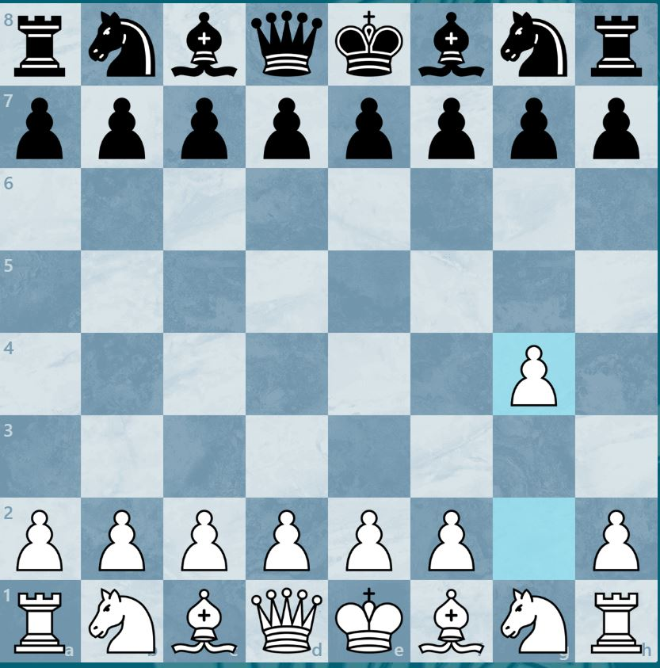

Rare sont les mauvaises ouvertures au échec, mais selon le moteur Stockfish certaine te place dans une mauvaise position dès leur utilisation.En voici quelque une.
Menu pour les petits impatients
- L'ouverture barne
- King's Pawn Opening: Owen, Guatemala Defense
- Mosquito Gambit
- King's Gambit Accepted: Orsini Gambit
- Giuoco Piano Game: Jerome Gambit
- King's Pawn Opening: The Bongcloud
- King's Gambit Accepted: Tumbleweed Variation
- King's Pawn Opening: Wayward Queen Attack
- Ware Openin/Kádas Opening
- Grob Opening
- Pour me contacter
L'ouverture Barne
Ceci est un mauvaise ouverture pour deux raisons principales. De un, cette position bloque le développement du cavelier en g1 et de deux, cela ouvre la diagonal du roi e1 qui peux rapidement devenir une faiblesse.
La meilleure réponse pour les noirs est seulemt e5 qui ouvre la diagonale de la dame vers le roix et permet au fou f8 de se développer au reste de la partie.
Cette ouverture est juste inutile
King's Pawn Opening: Owen, Guatemala Defense

Donc après fou a6 on as fou f1 prend fou a6, cavelier b8 prend fou a6, dame e2 et dame c8 et après cavelier c3.
Après cavelier c3, les blanc on l'avantage car leurs pièce sont activer et les deux pion centrale e4 et d4 contrôle bien le centre.
Les noirs sont dans une positition perdante.
Mosquito Gambit
Le problème avec cette ouverture c'est que la dame est développer trop tôt. Étant la pièce la plus forte, la dame doit constament bouger pour sauver sa peau.
Les noirs dès le deuxième coup se positionne dans une situation inférieur au blanc.
King's Gambit Accepted: Orsini Gambit
Cette ouverture n'est pas bonne parce qu'après b3 les noirs font dame h4 et c'est complètement perdant pour les blancs.
Giuoco Piano Game: Jerome Gambit
Sacrifier deux pièce pour le un coup foireux de la dame, je passe.
King's Pawn Opening: The Bongcloud
Malgré le fait que c'est un meme, cette ouverture n'est juste pas bonne. Celle-ci bloque le fou et la dame dès le deuxième coup.
cKing's Gambit Accepted: Tumbleweed Variation
Pourquoi? juste le nom de l'ouverture en dis gros sur ça force. Mais plus sérieusement cette ouverture n'est juste pas bonne.
King's Pawn Opening: Wayward Queen Attack
Comme le mosquito gambit, le développement de la reine est trop tôt et facilement prévisible pour les joueur expérimenter.
Ware Openin/Kádas Opening
 Donc les deux ouverture ont le mme but; développer la tour. Ces deux ouverturê serve à rien au final puisque après les jouer les noirs ont juste à positioner leur pion au centre (d et e), ce qui est perdant.
Grob Opening
Pourquoi jouer un pion qu'on ne peux défendre correctement, f3 le défend pas parce que ton roi deviens faible et h3 est juste vraiment faible...